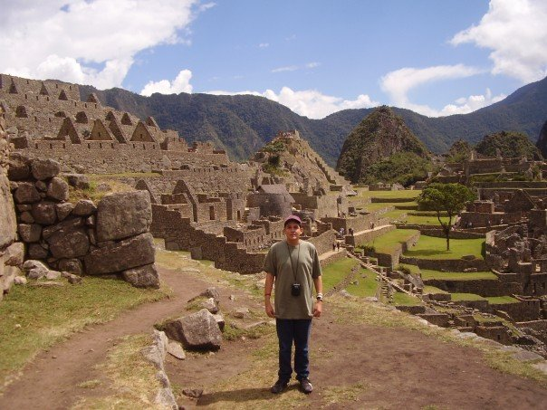
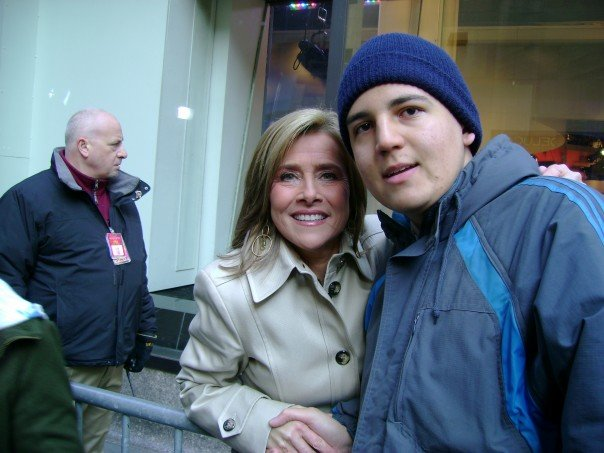
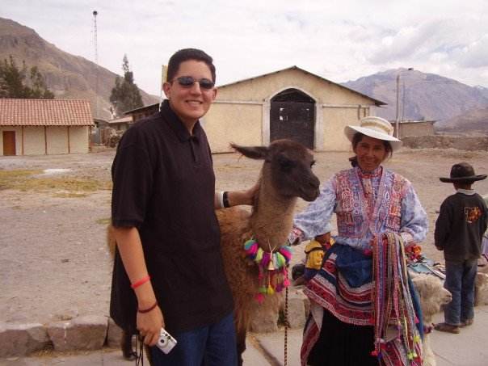
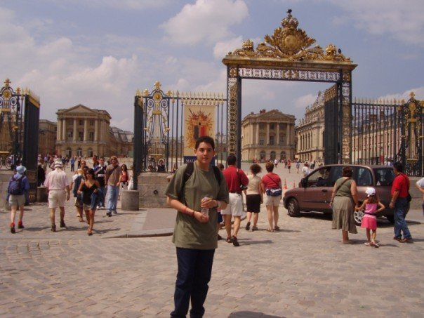
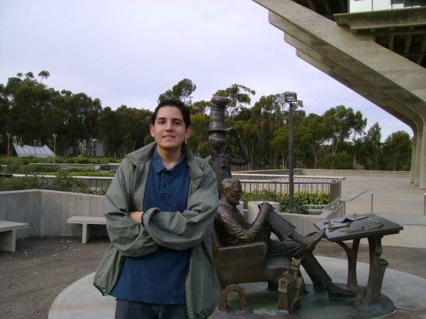
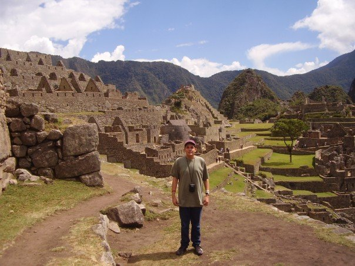
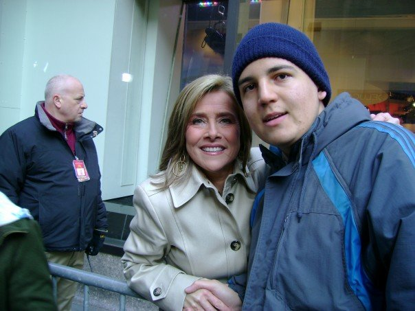
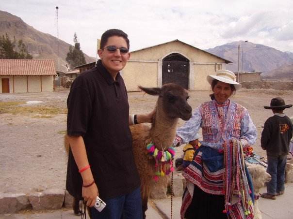
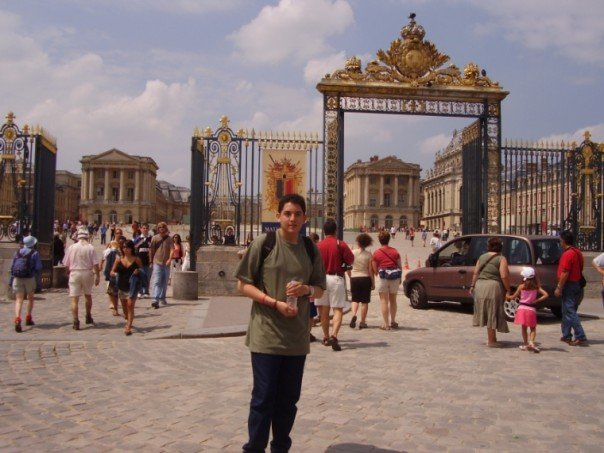
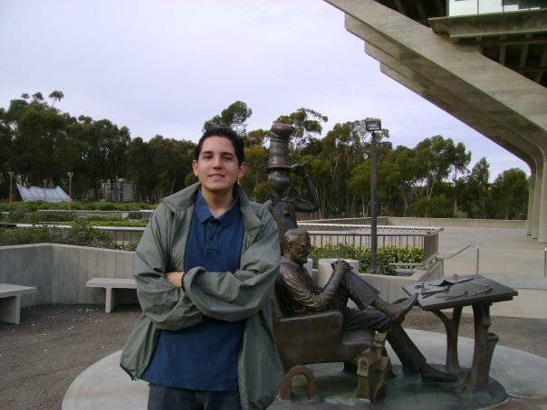

I am passionate about Public Administration and am equipped with exceptional training within public entities both as a graduate and intern.
I am an analytical professional skilled in successfully navigating public offices through compliant record-keeping practices and serving the general public through reception.
Furthermore, I am a collaborative communicator continually focused on building relationships; I am particularly adept at public policy formation, research, and record management.
I am skilled in Microsoft Applications (Access, Excel, PowerPoint, Word, Outlook, Publisher, Visio), Past Perfect, Content Management Systems, iManage, RecordTrac, CityLaw, and Google Docs.
Bilingual in English and Spanish.
Areas of Expertise include:
Public Policy Admin/Analysis
Public Relations/Media
Public Records & Research
Relationship Building
Legal & Historical Research
Local Governments/Municipalities
Program Management
Record Management/Archiving
Seeking a career that will lead to a lasting relationship in the fields of public administration, marketing or research, to demonstrate the organizational experience that I have gained over time from my previous employers.
I am also an avid traveler. I have visited Peru, France, Mexico and Italy.
 








